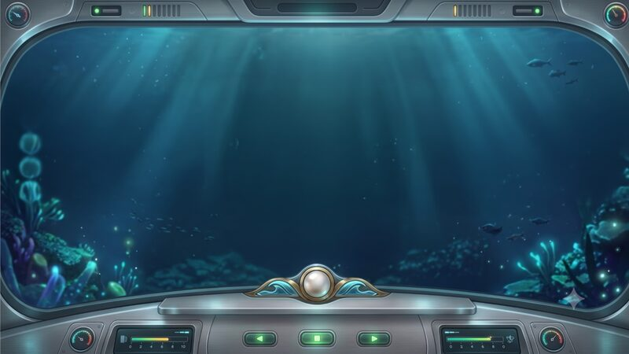

SEAgregate
A 2D waste-segregation game. Sort trash bags into biodegradable, non-biodegradable, recyclable and hazardous bins across Lake, River and Ocean levels before the timer runs out.
View on GitHub →
こんにちは — Hi, I'm
C++ Developer · Linux Enthusiast · Analytical Problem Solver
I'm Fred Jesus G. Heruela, a developer from the Philippines who likes turning math and analysis into tools people can actually use. I build desktop applications and games in C++17 with SFML 3, from a cost optimiser that finds the cheapest container shape for a given volume to an educational game about waste segregation.
Outside of code I run a hand-tuned Arch Linux setup with i3 and Neovim, and I apply the same analytical approach to everyday problems, like working out and costing my own DIY cleaning product formulas.

A 2D waste-segregation game. Sort trash bags into biodegradable, non-biodegradable, recyclable and hazardous bins across Lake, River and Ocean levels before the timer runs out.
View on GitHub →A desktop app that finds the cheapest dimensions for a closed box or cylinder of a given volume. It draws the result to scale beside a 1-metre stick and saves records you can browse and delete.
View on GitHub →My daily-driver Linux configuration: i3 with i3status-rust (Gruvbox theme), Neovim on LazyVim, Alacritty, tint2, Thunar, cmus and GIMP.
View on GitHub →Researched DIY formulas for car shampoo, dishwashing liquid and laundry detergent, with pH targets, an ingredient-swap analysis and a costed shopping guide in Philippine pesos.
View on GitHub →Open to opportunities and collaborations. Let's connect!